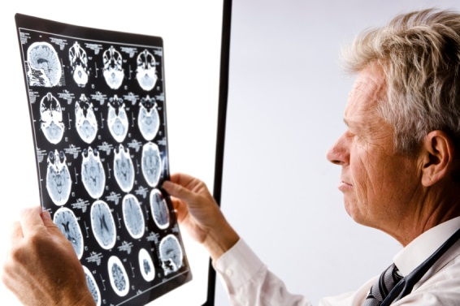

There are many specialists involved in diagnosing Multiple Sclerosis. As Multiple Sclerosis has a serious full body effect, many different types of specialists are required for a patient to undergo treatment.
If you are to experience any symptoms of Multiple Sclerosis listed above, you would first visit your general physician to find out what is wrong with you. Physicians are doctors who care patients of any age, who diagnose and treat illnesses. The doctor would examine and view your medical and family history.
To become a physician you must complete 2 or 3 years of undergraduate university education. Most physicians have a 4-year bachelor’s degree as admission to medical school is competitive. Applicants to medical school write the Medical College Admission Test (MCAT) and those with the highest undergrad marks have a higher chance being accepted. But all schools take other things into consideration such as character, extracurricular activities, and leadership qualities. Once the student has been accepted into medical school, into usually takes 3 to 4 years to complete. It provides a general medical education. After the end of med school, students become Doctors of Medicine (MDs). Then to become a physician, they must complete a residency program, which is job experience and training. This lasts usually 2 years. Once residency is complete, you have to pass tests set by the Medical Council of Canada (MCC) and the College of Family Physicians of Canada (CFPC). Physicians are currently high in demand in Saskatchewan as the population continues to boom.
A neurologist is a physician who specializes in the field of diseases of the nervous system. They will be involved in the diagnosis, testing, symptom, and treatment aspects. Neurologists are located in centers, hospitals, and general clinical settings.
To become a neurologist you must be excellent in school, earn good grades in both high school and university. To be eligible for medical school you must complete 2 or 3 years of undergraduate university education. Most neurologists have a 4-year bachelor’s degree as admission to medical school is competitive. Applicants to medical school write the Medical College Admission Test (MCAT). After being accepted into medical school, you will spend 3 to 4 years completing a general medical education. After finishing you become a MD. Then you must complete residency, the job experience program that lasts 5 to 6 years for a neurologist. All doctors must pass the exam of Royal College of Physicians and Surgeons of Canada (RCPSC) and receive a license from the province or territory you’ll be working.
Physiotherapists are people who tend to problems involving coordination, mobility, strength, and balance. They are part of the treatment aspect of dealing with Multiple Sclerosis. They will help with strengthening muscles, uses of rehabilitation equipment, orthotic support, and coordinate a fitness-oriented lifestyle. They also look to increase range of motion, muscle tone, and mobility as Multiple Sclerosis affects all of these aspects.
To become a physiotherapist you have to complete a 4-year bachelor’s degree, then a master’s degree for 2 to 3 years. Taking place in a university that offers a program in physiotherapy. You must take courses in statistics, psychology, and human physiology. After completely your schooling, you must meet the licensing requirements in the province in which you will practice in. This requirement is usually a written exam. All physiotherapists in Saskatchewan must be part of the Saskatchewan Physiotherapy Association in order to practice.
A dietitian is someone who organizes and provides information about food and nutrition. They will help a MS patient with maintaining a healthy diet. Eating healthy will help you stay healthy when dealing with Multiple Sclerosis. They can teach you to deal with weight management and also reduce bowel troubles and fatigue.
To become a dietitian, you must complete a bachelor’s degree in nutrition or dietetics. After completing the 4 year course, you now have to have practical experience in the field. This is usually done through an internship that lasts 40 weeks. The final step to becoming a dietitian is to pass the national registration exam. These can be completed with your province. Saskatchewan offers many programs for dietitians that help them succeed in their career.
A speech-language pathologist is someone who helps patients who have speech, swallowing, and language problems. As MS affects nerves, speech impediments are very common for people with the disease. The speech-language pathologist will help with speech production and clarity in the sessions with the patient. They, along with the dietician, will help with swallowing problems.
To become a speech-language pathologist, you will have to finish a master’s degree in the field of speech-language pathology. This includes classes on neurology, anatomy, linguistics, and courses in counselling, voice disorders, and basic training. Some universities also provide a PhD program for speech-language pathology. After, speech-language pathologist must be licensed to operate. Saskatchewan makes speech-language pathologist complete a provincial regulatory body exam.